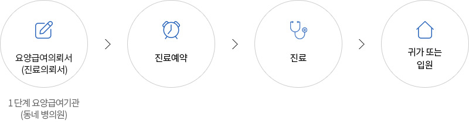

예약안내
진료예약은 방문, 전화, 인터넷을 통해 하실 수 있습니다.
보다 빠른 예약을 위해 환자의 등록번호 또는 주민등록번호와 주소, 전화번호를 알려주십시오.
-
방문예약
요양급여의뢰서(진료의뢰서) 및 신분증을 지참하고 방문하시어, 진료신청서 작성 후 원무라운지 또는
원무창구에 제출하시면 됩니다.- - 평 일: 오전 8시~오후 6시
- - 토요일: 오전 8시~오후 1시
- - 성 인: [대한외래] B3층 심전도실 옆
- - 암병원: [암병원] B1층 진료협력센터 옆
- - 성 인: [본관] 1층 로비, [대한외래] B2층 채혈실 옆, [대한외래] B3층 심전도실 옆
- - 소 아: [어린이병원] 1층 로비
- - 암병원: [암병원] 1층 로비
-
전화예약
서울대학교병원 예약센터(1588-5700)에서 예약을 안내드립니다.
- - 평 일: 오전 8시~오후 6시
- - 토요일: 오전 8시~오후 1시
-
인터넷예약
병원 홈페이지에 회원가입 후 이용하실 수 있습니다.
병원 환자 중 회원가입이 안 된 경우는 비회원 로그인 후 인턴세 예약을 이용하실 수 있습니다.
인터넷예약은 24시간 이용하실 수 있습니다.
-
앱예약
서울대학교병원 핸드폰 어플리케이션을 구글플레이 또는 앱스토어에서 다운로드받으신 후 이용하실 수
있습니다. 어플리케이션을 통한 예약은24시간 이용하실 수 있습니다.
-
1,2차 의료기관 의뢰
1,2차 의료기관에서 요양급여의뢰서(진료의뢰서)를 발급받으신 초진 환자는 진료협력센터를 통해 예약
가능합니다.
※의뢰서 미소지 시 상담이 제한 될 수 있습니다.- - 진료협력센터☎: 02-2072-1000
- - 평일: 오전 9시 ~ 오후 6시
예약취소
- 인터넷예약자는 물론 전화예약하신 분들도 홈페이지에서 간편하게 예약을 취소하실 수 있습니다.
※인터넷을 통한 예약취소는 진료일 전 자정(12시)까지만 가능 - 단, 진료와 함꼐 검사가 예약되어 있는 경우나 진료비를 사전에 수납하신 경우는 인터넷 예약취소가 불가하오니
예약센터(1588-5700)로 전화주시기 바랍니다. - 소중한 진료시간이 다른 분께 양보될 수 있도록 가능한 빨리 취소의사를 밝혀주십시오.
- 예약변경/취소 없이 진료를 받지 않을 경우 홈페이지 진료예약서비스가 제한됩니다.
현재 페이지에서 제공되는 내용과 사용편의성에 대하여 만족하십니까?